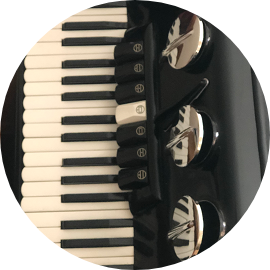

Pieter DelportEngineer ••• Designer ••• Wood Crafting ••• In Retirement I am a qualified Mechanical Engineer with Mechanical Design experience of 45 years I have teached as a Lecturer in Mechanical Engineering for post Grade 12 students Teached Engineering Graphics and Design for students from Grade 8 to Grade 12 I am very fond of Music especially Christen Gospel Music. I play the Accordion and Piano Hand Crafting Wood is very satisfying and I am always seeking new challenges in Woodwork. |
Teaching ••• Woodworking ••• MusicAs a kid of 8 years I started playing the Accordion When I worked for a couple of Years, I became interested in Teaching others Now that I am retired, I still help students where I can but spend most of time doing woodwork I have made special designed Chess Sets. |  |
My Skills.My Favourite SkillWoodwork is now my passion and with my design qualities, I am able to design and Handcraft wood into beautiful creations like the Chess Set. |
If you want an exclusive designed wood creation CONTACT ME
I will design a creation to your requirement out of any wood that is available. We can exchange ideas on what you need to be Handcrafted.